1下學期 第 4 章
生態系
答案卡
點題號可跳到該題詳解。開啟「遮住答案」後，點一下塗卡格才會顯示答案。
詳解
生產者（玉米）→初級消費者（牛）→次級消費者（人）。故選(D)。
看題目
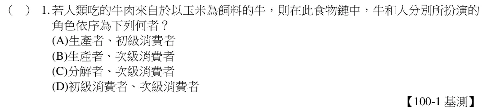
植物行光合作用時會吸收二氧化碳與水，蒸散作用會排出水蒸氣；動物攝食碳水化合物及水，排泄作用排出水，呼吸作用時排出二氧化碳與水蒸氣。故選(A)。
看題目
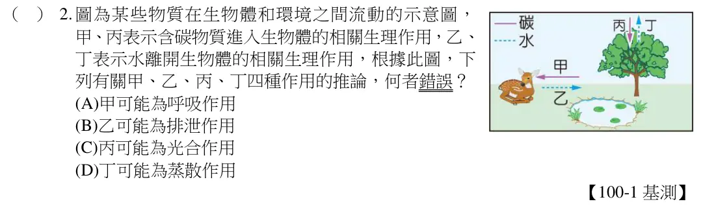
如圖所示，甲、乙兩生物的交互作用關係為：甲受害，乙得利。故選(C)。
看題目
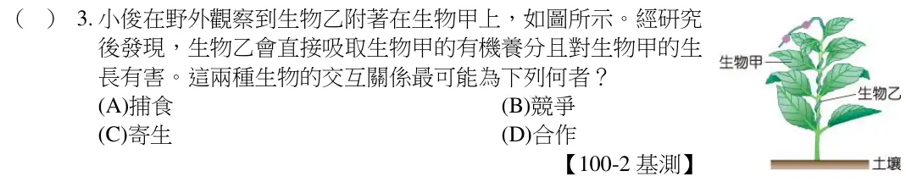
能量金字塔傳遞方向為由下往上；愈下的階層所含能量愈多。故選(B)。
看題目
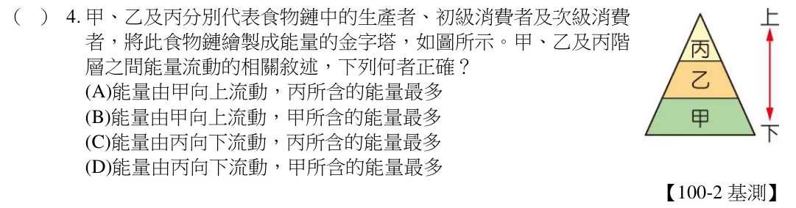
生態系中生產者所占總能量最多，再來是初級消費者，接著依序遞減，每次傳遞後僅剩餘10%能量。故草（生產者）總能量最多，鷹（最高級消費者）的總能量最少。故選(A)。
看題目
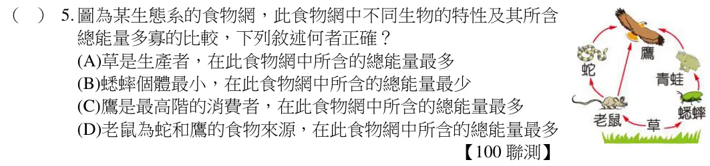
在完整的生態系中，生物部分應該要有生產者、消費者和分解者，四位同學中，阿金的生態瓶只有消費者；阿蓮的生態瓶只有消費者和分解者；阿平的生態瓶有生產者、消費者和分解者；阿祥的生態瓶只有生產者和消費者。故選(C)。
看題目
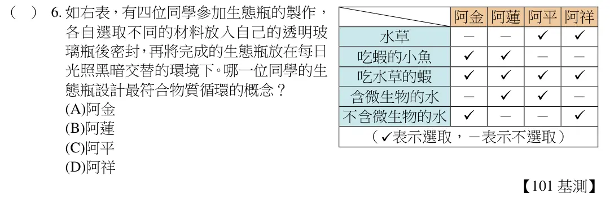
在食物鏈中，不同階層生物所含總能量的多寡依序為：生產者＞初級消費者＞次級消費者＞三級消費者，因此圖中的丁應為生產者，生產者可行光合作用釋出氧氣。故選(D)。
看題目
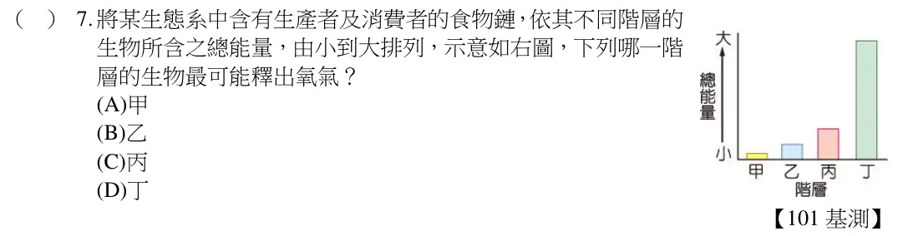
(A)蝦和海豹僅有捕食關係；(B)蝦與企鵝無任何關係；(C)鯨魚和海鳥屬於競爭關係，共同捕食蝦；(D)烏賊被海鳥捕食，烏賊又和海鳥共同競爭捕食蝦。故選(D)。
看題目
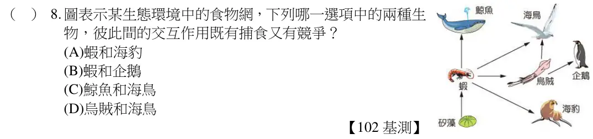
在生態系中，生產者的總能量最多，隨著能量層層傳遞與消耗，各級消費者的總能量也依次遞減，到最高級的消費者時，其總能量最少，依據此繪製而成的圖形即為能量塔。本題中食物鏈的生產者為矽藻→丁，浮游動物為初級消費者→丙，小魚為次級消費者→乙，大魚為三級消費者→甲。故選(C)。
看題目
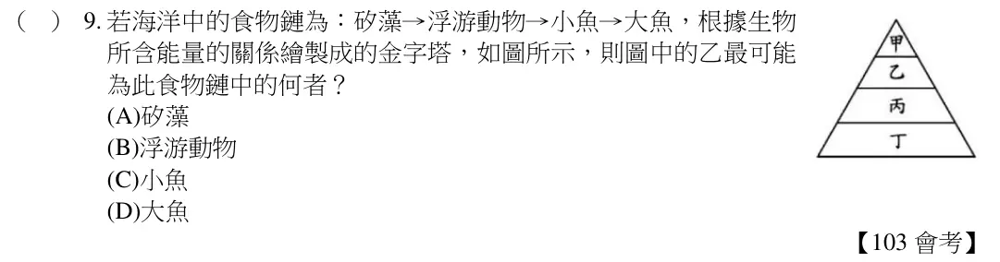
在此四支試管中的生物，只有藍綠菌屬生產者，其它三者皆為消費者，因此藍綠菌可利用試管內的CO2 進行光合作用，製造養分以獲取能量，其他三者在缺乏生產者的情形下，會因缺乏能量來源而死亡。故選(C)。
看題目
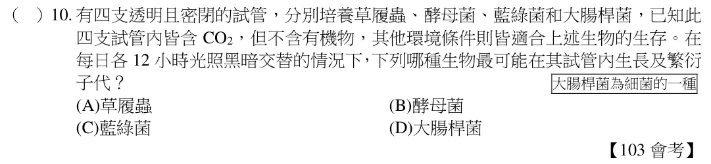
本題中所列的系列演講，在8 日和22 日的演講主題分別探討黑面琵鷺及櫻花鉤吻鮭的行為，屬探討族群的層次；15 日及29 日的演講主題分別探討無脊椎動物的分布及紅樹林生態系中的生物組成，屬於探討生物群集的層次。故選(C)。
看題目
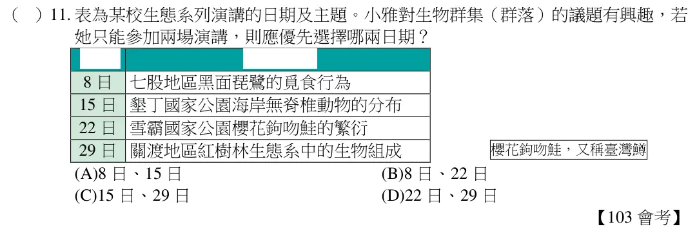
通常生態系是呈現動態平衡，此時，(A)許多物質仍會進行循環利用；(B)外來種進入此生態系且進行繁殖後，會造成原生態系的物種改變，導致食物鏈的改變；(C)群集中各族群數目的穩定，影響因子包含出生、死亡、遷入和遷出等；(D)生產者所含的總能量應高於消費者所得的總能量。故選(B)。
看題目
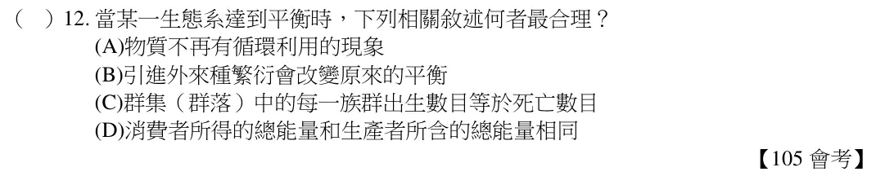
如表所示，虎鯨和藍鯨、海豹為捕食關係；藍鯨和阿德列企鵝為競爭關係；其餘生物之間無明顯食性關連。故選(A)。
看題目
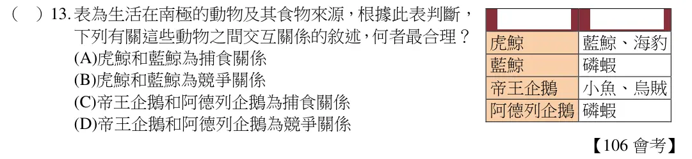
在同一條食物鏈中，生產者的總能量應最大，其次依序為初級消費者、二級消費者、三級消費者，由此可知：丁為生產者，丙為初級消費者，乙為二級消費者，甲為三級消費者，以種子為食的鳥類應為初級消費者。故選(C)。
看題目
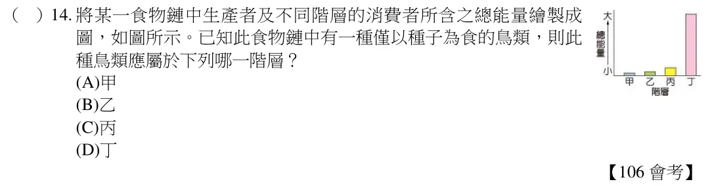
看題目
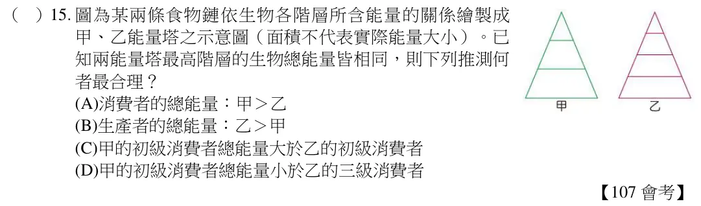
看題組文章
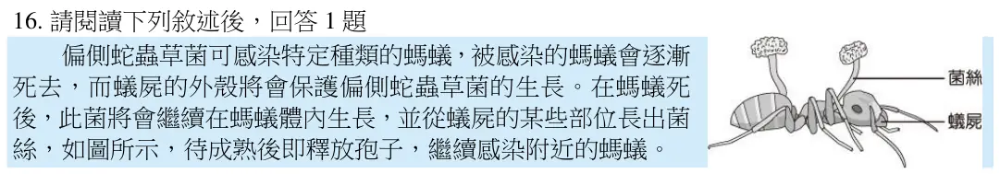
偏側蛇蟲草菌會感染螞蟻且使螞蟻死亡，此種關係為寄生者與寄主的關係。故選(A)。
看題目
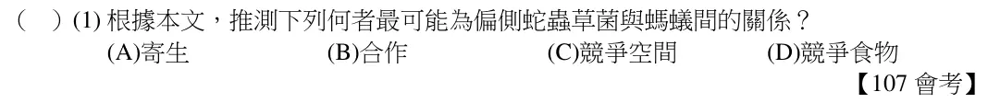
看題組文章
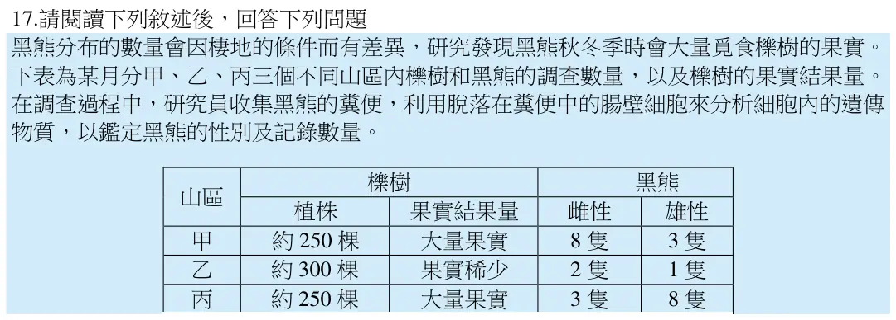
由上表資料判斷：(A)櫟樹的棵數越多，黑熊的數量並沒有較多；(B)由於甲區和丙區櫟樹的棵樹相同，但雌、雄黑熊的比例卻不相同，故無法由櫟樹的棵數推知其對雌、雄黑熊所占比例之影響；(C)櫟樹結大量果實時，黑熊的數量較多；(D)由於甲區和丙區皆結大量果實，但雌、雄黑熊的比例卻不相同，故無法由櫟樹果實的結果量推知其對雌、雄黑熊所占比例之影響。故選(C)。
看題目
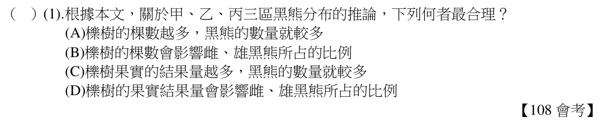
牛背鷺可食用牛背上的寄生蟲，牛隻亦可因此減少寄生蟲對其健康的危害，對牛背鷺和牛都有好處，屬互利共生的關係。故選(A)。
看題目
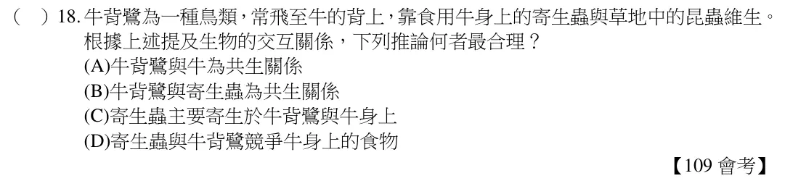
由表可推知這些生物之間形成的食物鏈如下：植物→蚱蜢→蜘蛛→蜥蜴→蛇。以能量塔的概念，愈高級的消費者，其所含的總能量愈低。故選(A)。
看題目
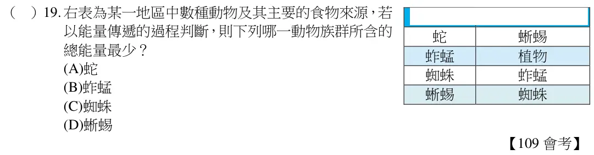
由圖可知甲、乙為生產者；丙、丁會競爭食物乙，當丙的數量增加會不利於丁生存；己會捕食丙，當己減少時丙被捕食的機會降低，對丙的生存有利；庚會捕食戊，但庚和戊又同時競爭食物丁。故選(D)。
看題目
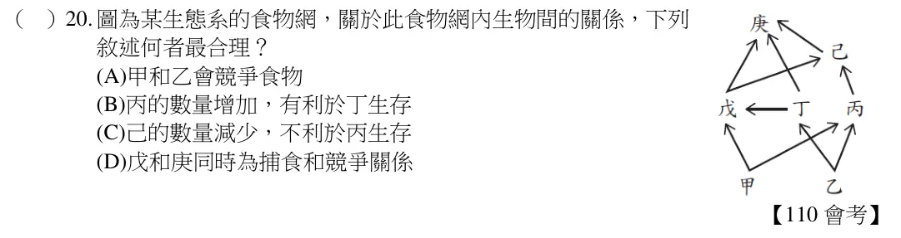
由題目中的珊瑚可得知人工魚礁位於海洋生態系，而藻類生存的環境必須有光才能進行光合作用，因此人工魚礁應放置於淺海區較適合。故選(C)。
看題目
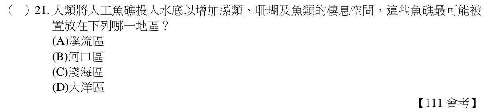
對照此食物鏈和能量塔的關係，可知蛇為能量塔中的丙階層，乙階層為其底下一層，能量應為丙階層的10 倍，推估約為100,000 能量單位。故選(D)。
看題目
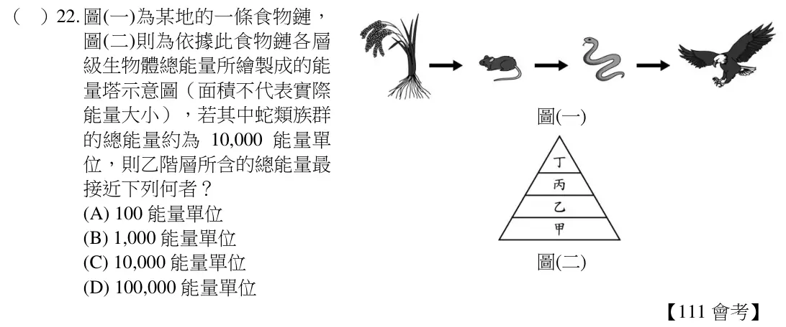
植物為生產者，單一物種的樹林中生產者的物種數只有1 種，此樹林的消費者物種數目會跟著減少，食物網會變單純，生態系會變得比較不穩定。故選【D】。
看題目
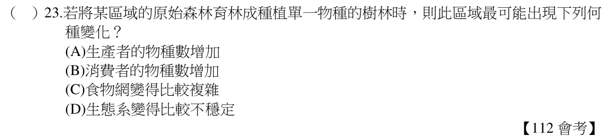
生物體中難以代謝的化合物，其濃度會經食物鏈的食性關係逐一累積：生產者＜初級消費者＜二級消費者＜三級消費者。依表（二）中生物體內DDT 的含量丁＜乙＜甲＜丙，可推知食性關係為丁→乙→甲→丙。故選【B】。
看題目
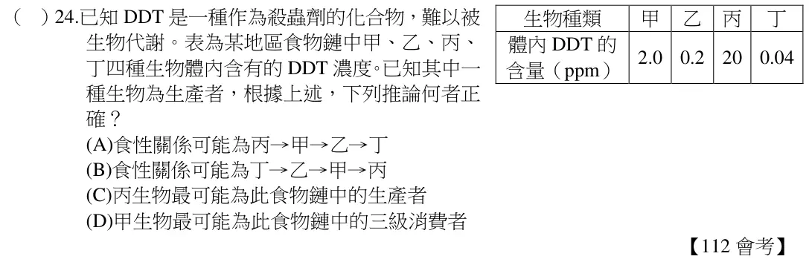
如果個體數量沒有明顯變化，則無法看出該時期出生、死亡、遷入、遷出的變化，因此(A)、(C)無法得知。而出生、遷入為同一種概念，表示族群的增長，死亡、遷出為同一概念，表示族群的減少，兩兩應一起討論。故選【B】。
看題目
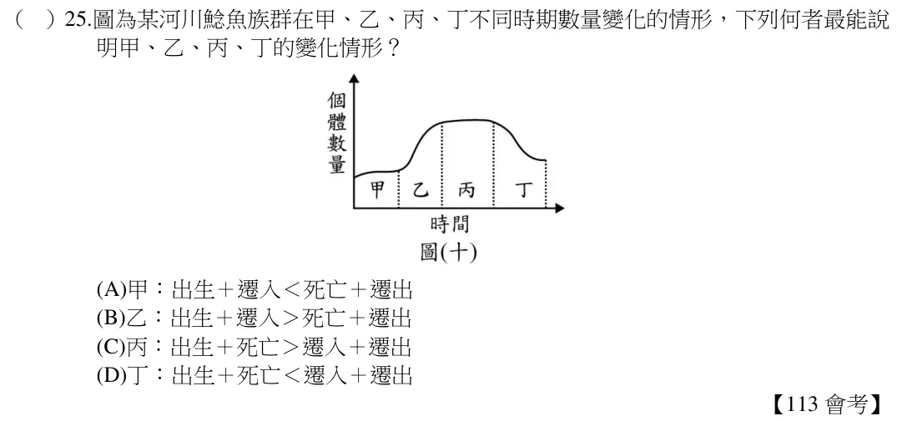
由題幹得知白尾八哥會和麻雀競爭食物，且還會以麻雀幼鳥為食，故兩者關係為競爭與掠食。故選【A】
看題目
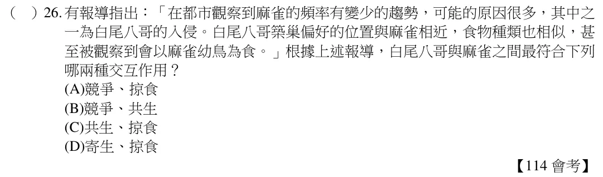